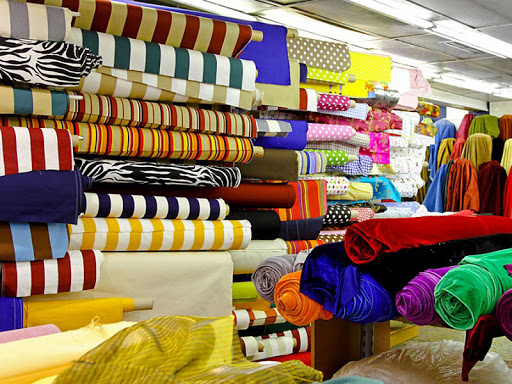
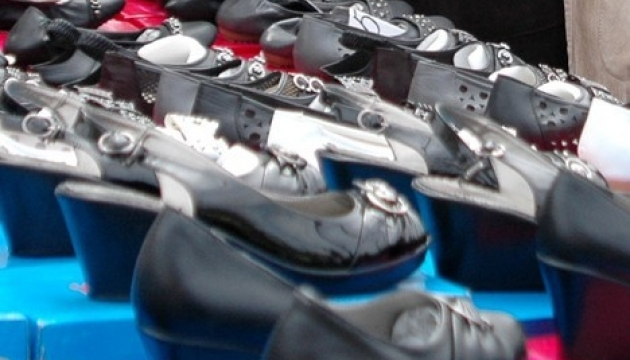

Легка промисловість – це комплексна галузь, що включає майже 20 підгалузей, які можуть бути об’єднані в три групи.
Легка промисловість є однією з найважливіших серед галузей виробництва непродовольчих товарів. Продукція легкої промисловості йде на задоволення потреб населення, забезпечуючи його, одягом, взуттям та іншими предметами споживання, а також використовується в інших галузях промисловості у вигляді сировини і допоміжних матеріалів (у харчовій, машинобудуванні та ін.). Найбільш тісні зв’язки вона має із сільським господарством і хімічною промисловістю – основними постачальниками сировини для галузі, а також машинобудуванням.
Українська легка промисловість сьогодні є потужним багатогалузевим комплексом з виробництва товарів народного споживання та одна із небагатьох галузей господарства зі швидким обертанням капіталу. Потенційні можливості підприємств легкої промисловості дозволяють виробляти широкий спектр товарів народного споживання, здатних задовольнити попит на внутрішньому ринку. Станом на 01 березня 2015 року легка промисловість нараховує понад 2500 підприємств, з яких тільки 31,3% є економічно активними, 53,4% - банкрути, 15,3% - економічно неактивні

В 2015 році за даними Державної статистичної служби присутність на ринку товарів легкої промисловості становить близько 40 млрд. грн.(виробництво+імпорт-експорт), однак за розрахунками та експертними оцінками обсяг внутрішнього ринку становить більше 120 млрд. грн., що втричі перевищує офіційні дані, тобто, ринок товарів легкої промисловості України вкрай «тінізований».
Станом на період січень-березень 2014р. налічувалось приблизно 1,5 тис. підприємств взуттєвої, шкіргалантерейної та шкіряної промисловості.
За експертними оцінками щорічно виробляється 35-40 млн. пар взуття, з яких понад 35% експортується приблизь в рівних частинах до ЄС і СНД. За офіційними даними у 2014 р. вироблено 27 млн. пар взуття.
За 2014 рік обсяги імпорту з Європи перевищили обсяги імпорту з країн СНД на 198,9 млн. дол. США (в 1,7 рази), а експорту на 618,1 млн. дол. США (в 3,8 рази).
Різниця в показниках зумовлена тим, що український виробник в основному поставляє до країн Європи лише послуги (виробництво товарів з давальницької сировини), а до країн СНД здійснюється прямий експорт.